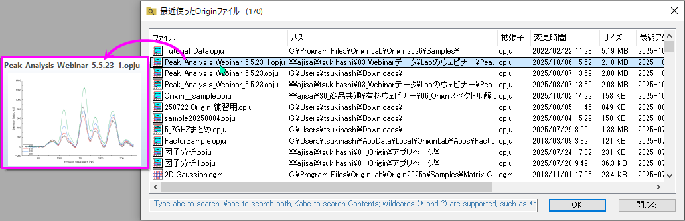
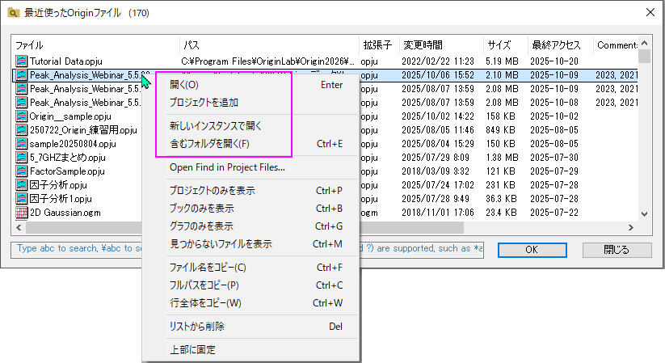
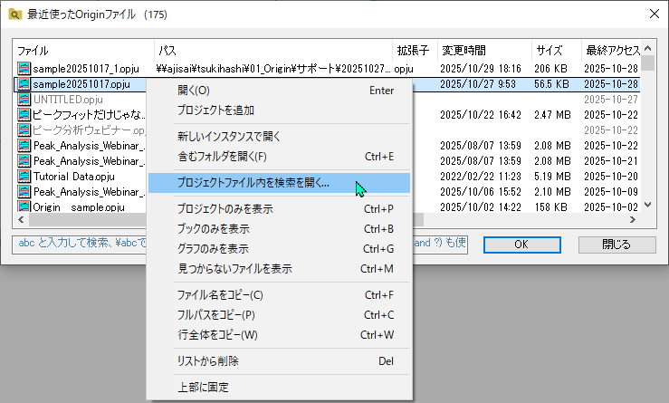
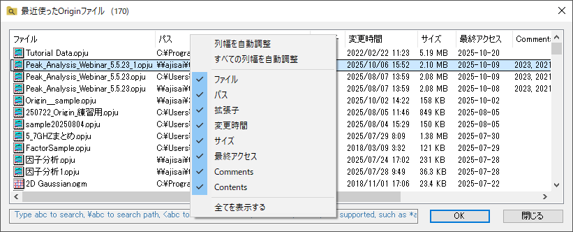
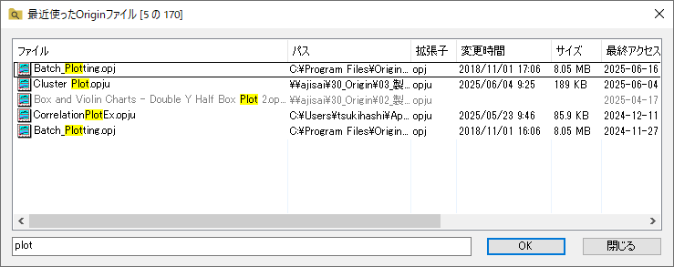
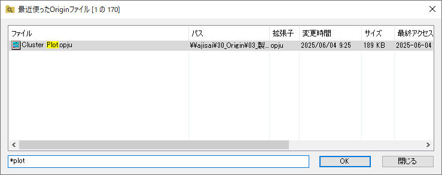
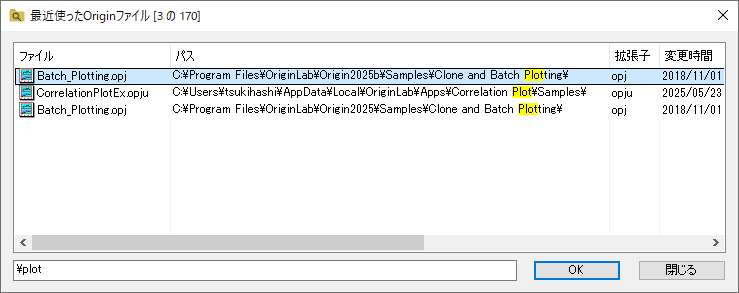
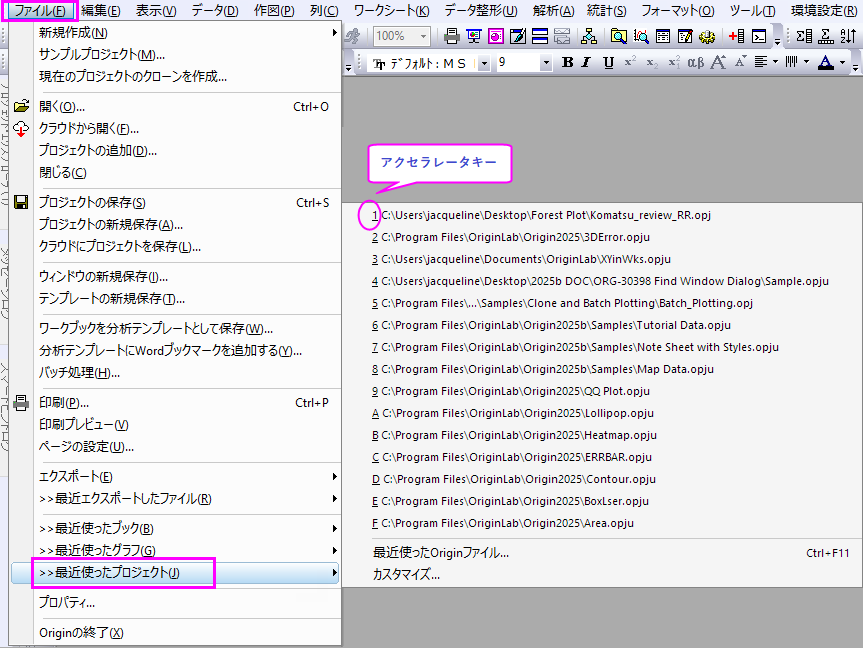
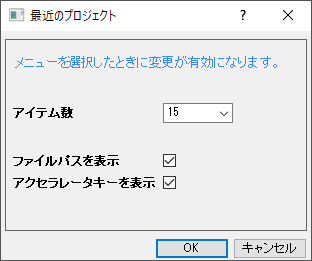

最近使ったOriginファイル
Recent-Origin-Files
最近使ったOriginファイルダイアログには、Originのプロジェクトファイル(*.opj(u))と子ウィンドウファイル(*.ogw(u)・*.ogg(u)・*.ogm(u))が表示されます。最近使用されたOriginファイルを閲覧したり見つけたりするのに役立ちます。
最近使ったOriginファイルダイアログを開くには
- Originのメインメニューで、ファイル：最近使ったプロジェクト：最近使ったOriginファイル...の順に選択します。
または、
- Originのワークスペースで灰色の領域をダブルクリックする
または
- OriginのGUIで空のスペースを右クリックし、コンテキストメニューで最近使ったOriginファイルを選択
または
- Origin上でショートカットキーCtrl+F11を押す
または
- スクリプトウィンドウで以下のLabtalkスクリプトを実行します。
doc -mrf;
 | システム変数を使用することで、ワークスペースをダブルクリックして最近使ったOriginファイルダイアログを開き、Ctrlキー+ダブルクリックでプロジェクトブラウザを開くかどうかを制御できます。
- @DDW=0（デフォルト）：ダブルクリックで最近使ったOriginファイルダイアログを開き、Ctrl+ダブルクリックでプロジェクトブラウザを開きます。
- @DDW=1：ダブルクリックとCtrl+ダブルクリックの両方を無効にします。
- @DDW=2：ダブルクリックで最近使ったOriginファイルダイアログを開かず、Ctrl+ダブルクリックでプロジェクトブラウザを開きます。
|
プレビュー
Originファイル名にカーソルを置くと、プロジェクト内のグラフ/ワークブックのポップアッププレビューがプロジェクト名で表示されます。

ファイルを開く
- 行をダブルクリックして、Originのファイルを開きます。ファイルがプロジェクトの場合、現在のプロジェクトを閉じて、選択したファイルを開きます。ファイルが子ウィンドウファイルの場合、現在のプロジェクトで開かれます。
- ファイルを右クリックします。
- 開くを選択してファイルを開きます。ファイルがプロジェクトの場合、現在のプロジェクトを閉じて、選択したファイルを開きます。ファイルが子ウィンドウファイルの場合、現在のプロジェクトで開かれます。
- プロジェクトの追加を選択して、ファイルを現在のプロジェクトの第1階層のフォルダに追加します。
- 新しいインスタンスで開くを選択して、ファイルを新規プロジェクトで開きます。
- 保存したフォルダを開くを選択して、ファイルを保存したフォルダを開きます。

プロジェクトファイル内を検索
ファイルを右クリックし、プロジェクトファイル内を検索を選択するとプロジェクトファイルで検索ダイアログが開きます。

表示ファイルを指定
表示するファイルを指定するには、ファイルまたはファイルリストの空のスペースを右クリックして、次のオプションを選択するか、ホットキーを使用します。
- プロジェクトのみを表示 (Ctrl+P)
- ブックのみを表示 (Ctrl+B)
- グラフのみを表示 (Ctrl+G)
- 所在不明のファイルを表示 (Ctrl+M)：デフォルトでは、所在不明ファイルはダイアログに表示されません。それらを表示するには、このオプションにチェックを付けます。所在不明ファイルの場合、またそれらのための前の場所を開くことをサポートします。
最近使ったファイルの情報をコピー
最近のファイル情報をコピーするには、ファイルを右クリックして次のオプションを選択するか、ホットキーを使用することができます。
- ファイル名をコピー (Ctrl+F)
- フルパスをコピー (Ctrl+C)
- 行全体をコピー (Ctrl+W)
このリストからファイルを削除する
1つまたは複数のファイルを選択し、右クリックしてリストから削除を選択し、このダイアログでファイルを削除します。
| Ctrl + Aキーを使用して、リスト内のすべてのファイルを選択できます。また、Ctrl+ZとCtrl+Yホットキーによって、この削除操作を元に戻したりやり直したりすることができます。
|
ファイルを先頭にピン留めする
1つまたは複数のファイルを選択し、右クリックして先頭にピン留めを選択し、このダイアログの先頭にファイルをピン留めします。その後、これらのファイルの行は黄色で背景が塗られます。
トップファイルにピン留めされているを右クリックし、ピン留めを外すを選択すると、ファイルはこのダイアログの列でソートされます。
リストで表示や列の順序を変更
- 列ヘッダ領域で右クリックして、表示したい項目を選択したり、非表示にしたい項目の選択を外します。

- 列の各行の完全な情報を表示するには、列ヘッダを右クリックして、列のサイズを合わせるをクリックします。すべての列のサイズを合わせるをクリックした場合
- 列ヘッダのカスタマイズは後で使用できるように記憶されます。
最近使用したOriginファイルを検索
- ファイル名でファイルを検索する文字列を入力します。

- ワイルドカード（* および ?）がサポートされています。たとえば、末尾を「*abc」というように検索できます。


最近使ったOriginファイルメニュー
ファイル:最近使ったプロジェクトメニューを選択すると、フライアウトメニューに15個の最近使用したプロジェクトファイルのリストが表示されます。プロジェクト名をクリックして、最近のプロジェクトを簡単に再度開くことができます。また、このメニューが開いているときは、プロジェクトのアクセラレータキーを押して再度開くことができます。

フライアウトメニューのカスタマイズ
カスタマイズ...メニューの下で、最近使ったプロジェクトダイアログを開きます。メニューに表示されている最近のプロジェクトの番号を変更したり、ファイルのファイルパスとアクセラレータキーを表示するかどうかを指定したりできます。このメニューを選択したとき、すべての変更が有効になります。

| - メニューでファイルパスが非表示になっている場合は、ファイル名にカーソルを置くと、ツールチップとステータスバーにパスが表示されます。
- システム変数を使用して、このフライアウトメニューをカスタマイズすることもできます。
- @MRP：最近のプロジェクト項目の数を設定します。デフォルトでは、@MRP=15 です。
- @MRPHP：ファイルパスを表示するかどうかを設定します。デフォルトでは@MRPHP=0で、メニューにファイルパスを表示します。
- @MRPA：アクセラレータキーを表示するかどうかを設定します。デフォルトでは@MRPA=1で、メニューにアクセラレータキーを表示します。
|